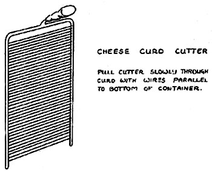
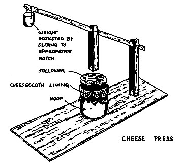
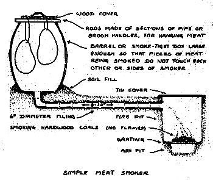

MAKING CHEESE
Most of what you grow in a time of plenty can be stored as surplus for future use in bleaker days. But what about milk? Refrigeration will hold it for two weeks, but not longer effectively. And the ancient tiller of the soil had no refrigeration. His milkers were dry many more months of the year than today; yet milk, by necessity, was a major part of his diet. Somewhere along the chain of agricultural development, probably not too far after the discovery of yogurt, came cheese. Solidified milk that not only lasted months but improved in flavor as the days passed.
There are countless varieties of cheese in the world, from soft to hard, mild to sharp, white to blue or brown. The French alone make three hundred kinds, although most are simply regional variations on a theme. Almost all of them are produced in basically the same way, their distinctive quality being the outcome of bacterial conditions, means of storage, additives, aging, and, of course, type of milk used . . . skim or whole; from cows, ewes, goats, buffalo, llamas, or even yaks.
For the beginner with a small herd of goats, a variant of "American" whole-milk cheese is perhaps the best. It lends itself well to production from goat's milk, takes no expensive equipment, and is surprisingly easy to make. The one thing to remember in planning a cheese cellar is that the volume of your yield shrinks considerably as you progress from milk to cheese. Don't think that by starting with five gallons of milk you'll end up with a year's supply of cheese. You're going to nibble up this delicious homemade dairy product faster than you think.
Cheese is made by coagulating milk, removing the whey,or liquid, and preserving the curd, or solid part. Coagulation is through the addition of rennet, a natural salt-brine extraction from the fourth stomach of young milk-fed calves (cows have four stomachs). Rennin is an enzyme that acts upon case in, the chief protein found in milk. Although tile chemistry is complex, you really don't have to know all about it to get started. The fact that you can buy rennet readily at the country store is enough. There'll be time for more reading on the subject some long winter's evening when the harvest is in and the chickens are lying low . . . over a hunk of your own sausage and a wedge of your first wheel of cheese. Since is a natural produce, as long as you follow the tried and true methods you'll have good results.
THE MAKINGS FOR A CHEESE
The Milk. For a family-sized wheel of cheese, star, with five gallons of milk (twenty quarts). If, as is likely, your grit herd is too small to supply this much milk in a day, it's quite all right to keep the milk in cool storage (50° to 60° F) nil you have enough. A week is about the practical limit. Be sure it's in well-sealed containers so it doesn't pick up any odors which would spoil your cheese before you even start.
The Starter. If you're in dairy country, commercial starter containing Streptococcus lactis can be bought locally. Hoes, ever, a satisfactory home-kitchen "starter substitute" for five gallons of milk is one cup of cultured buttermilk. In the distant past cheese was always made from milk in the process of souring. Today, for more consistent results, fresh milk is used with the necessary bacteria being introduced as the stark-;
Stir the starter into the milk and keep stirring while the mixture is heated slowly to a temperature of 85° F. You have a little flexibility with the temperature, but try to stay as close to 85° F as possible. Use of a double boiler is recommended to keep the milk from scorching. Putting the milk pot in a large tub of water over the stove will do admirably.
Rennet. Once the desired temperature of 84° to 86° F is reached, you're ready to add the rennet. Use one full teaspoon of rennet freshly mixed with three-fourths of a cup of cold water. Stir the rennet solution into the heated milk slowly.
At this stage food coloring may be added. However, since most of these are chemical in nature, they add an unnecessary artificiality to your cheese. There's nothing wrong with white cheese. Of course, once you've made a few wheels, you'll want to experiment with natural coloring agents such as saffron, achotti, or even licorice extract. Or try some different herbs and spices for piquancy. But don't be surprised at the strange flavors, colors and failures you may achieve. For your first wheel, stick with a white cheese.
The milk and rennet mixture should be stirred with a wooden cheese paddle, perforated wooden spatula, or just a plain, large flat wooden spoon for one minute, no more than two (count from 101 to 200 slowly). Then let it sit and watch it coagulate. This will take roughly half an hour. At the end of this period you have a firm jelly-like curd. But suspended throughout the curd is whey. The whey must be extracted by cutting before your cheese can go any further.
CUTTING THE CURD
A good way to judge when the curd is ready for cutting is to press the cheese paddle, lightly, flat on the top of the curd near the side of the pan. When ready, the curd should break away clean from where it touches the pot. Insert a knife, one long enough to touch the bottom of the pot, all the way down at the edge, and slice across the whole curd. Repeat the process until you have a series of parallel cuts half an inch apart. Cut these parallel strips into squares by slicing crosswise, again with half-inch spacing. Now take a wire cheese cutter, or use an angel-food cake breaker, insert it at the edge of the pot and slice the curd horizontally all the way to the bottom. After cutting, let the curd sit for fifteen minutes. Whey will drain out while it sits.
HEATING THE CURD
After its fifteen-minute rest, heat the curd .slowly, stirring constantly with the cheese paddle, in the double boiler or tub till it reaches 100° F. This should take. about twenty minutes over low heat. While it's heating, make sure you stir constantly with the cheese paddle. Keep your stirring gentle at the beginning. Be careful not to let the curd scorch on the bottom. After about ten minutes you'll notice the curd stiffening. Keep paddling, but you no longer have to be so gentle Once 100° F is reached, remove the pot from the stove. Stir it up every ten minutes or so. You'll see that as it cools the curd contracts, forcing out more and more whey. Check the temperature occasionally. When it has dropped back to 85° F, keep it at that level; if necessary move the pot to sit nearer the stove again. After forty to sixty minutes of cooling, test a piece of the curd by pressing it between thumb and forefinger. It should feel springy. Release your fingers, and the curd should crumble somewhat in your hand. You're ready to remove the whey
SEPARATING THE CURD AND WHEY
Letting the curd settle to the bottom for a few minutes and dipping off most of the whey will make your batch easier to handle. Pour off the rest of the whey through a strainer, meanwhile stirring the curd. Otherwise it will stick together and form one lump . . . which is what you want eventually, but not yet. Your stirring will liberate more and more whey. Drain it off.
Keep a sharp eye on the curd's consistency. This is the trickiest stage of cheese-making. 1f all the whey is extracted, you'll have a cheese with the consistency of an old Chianti cork. If not enough is removed, you'll end up with a weak, droopy cheese similar in texture to watered-down library paste. Sample the curd as you work. When it feels springy and rubbery, bite into it. If it squeaks as you chew, it's ready. Pour off all the remaining whey and get set to salt the cheese.
SALTING
A little at a time, add one level tablespoon of salt per gallon of curd. If you're making the five-gallon beginner's cheese, you want five spoonfuls of salt. Stir after each sprinkling of salt to mix it in evenly. Check the temperature of the curd occasionally; you still don't want it to fall below 85°F.
HOOPING
The hoop. If possible, get a small wooden cheese hoop from the general store, the local auction, or a friendly neighbor. Since cheese hoops are going the way of the buggy whip, however, finding one may be a problem. Of course, you can make your own wooden cheese hoop. Or, if your carpentry skill hasn't had enough practice yet for this, you can settle for a No. 10 can (the big size used by institutions and restaurants for their steam-shriveled vegetables). Clean the can and cut out the top and bottom. Be sure you leave no rough edges . . . you're going to have to slide the finished cheese out. Use the lid you just took off as a template to cut two circles from half-inch plywood. Tliese should fit loosely enough to slide up and down in the can. Of course, if you are lucky enough to find a readymade cheese hoop, you'll probably get the press and follower-the equivalent of your two circles---with it. Ever wonder where cheese cloth got its name? Well, here's where. Line the hoop or can with a piece cut wide enough to overlap about an inch at the seam and long enough to fold over and cover the bottom. The hoop should be set in a pan to catch the additional whey you are about to extract. Essentially, what you want is a gauze bucket sitting inside the hoop, covering the bottom and with enough left over at the top to fold in once it's filled with curd so the cheese is completely covered by cloth. You don't need too much extra at the top; the cheese will shrink under pressure. Fold the top of the cloth over the outside, or rim, of the can and put a strong rubber band around it to keep the cloth from falling into the hoop along with the curd. Ladle about a fourth of your curd into the hoop. Press it down with a wooden spoon all around, making certain all air bubbles are pushed out and the curd is all the way down to the bottom and out to the edges of your hoop. Put in another quarter of the curd, continuing to tamp it down, then another quarter, then the last bit. Now fold the cloth over neatly, put the wooden followers on top and the cheese is ready for pressing.
PRESSING
Place the hoop, still in its pan, into your cheese press for one hour. It's a good idea to have a flexible weight system. A ten- to twelve-pound weight should be just about right. Slide it up and down the arm to vary the weight. Depending on the amount of whey left, you might need a little more or a little less. What you want is sufficient pressure to give the curd one last squeeze, but not enough to force it out at the bottom of the hoop.
DRESSING
Remove the cheese hoop from the press. Unfold the cloth at both top and bottom and pull to eliminate any wrinkles that may have formed inside the hoop during pressing. Now trim off the excess cloth so that when you fold it back over the top and bottom it meets in the center of the wheel, without much overlap. Stick it back in the press and add another two pounds to your weights. Slowly; don't force down suddenly. Let it press for twenty-four hours in a shed or cellar that's kept at a temperature of around 60° F.
CURING
After removing from the press, keep the cheese in the hoop for two additional days. But lay it on its side so that air can enter freely from what used to be top and bottom. The room temperature should be between 50° and 60° F. After two or three days the cheese can be easily removed from the hoop. Wipe it with a damp, clean cloth, then towel it carefully with a dry one. Bacterial action has helped to make your cheese. Now, however, you don't want any more. To keep mold from forming, the cheese should be wiped clean once a day as it cures, or ages. Keep it on a board and turn it upside down after each day's cleaning to ensure even drying of both top and bottom. In a week the cheese should have formed a good solid rind.
PARAFFINING
To avoid having to sponge-bathe the cheese every day for as long as you want to keep it, paraffin it. After the rind has formed, melt some paraffin in a double boiler over low heat. Be careful, it burns, and you're not trying for homemade napalm. As it melts, you'll notice it will begin to smoke. From that point on, keep the temperature just high enough so the paraffin stays liquid. Paint on an even layer over the entire cheese with a clean brush. Be sure you cover every spot; Achilles' mother left his heel uncovered and look what happened to him. Once the cheese has been coated with paraffin, you can store it in your cool cellar for months . . . if you can resist the temptation to eat it.
MAKING YOGURT
One of the healthiest and simplest of dairy foods to prepare is yogurt. You don't need fancy equipment, although if you're going to make it often, an electric incubator may be worth consideration because it will give you more consistent quality with less watching. But it's a convenience, not a necessity. A thermometer will be sufficient to indicate the desired 100° to 120° F temperature until you learn to estimate it by dropping some milk on the back of your hand.
The first thing you'll need for yogurt is some starter culture. Get Bulgarian culture. It's the best. Proportions to use and directions come with your starter. The one thing to remember is that the instructions often talk only about cow's milk. Don't let that bother you if you have milk goats. Goat's milk works fine for yogurt.
Yogurt-making depends on bacteria. The right kind of bacteria, however. That's what you're paying for in your culture. So be sure all the utensils you use are very clean before you start.
First bring the quantity of milk specified by your culture instructions to a near-boil. Be sure you don't let it actually reach the boiling point. This would impair flavor. Let cool to the 100° to 120° F level. Mix in the culture thoroughly with a wooden spoon, then pour into clean, pre-warmed jars or crocks. Give these a warm sitz-bath in water about three-fourths the height of the containers. Keep at the 100° to 120° F level. When the yogurt is the consistency of heavy cream, it's ready for the refrigerator. If you don't have a refrigerator, plunge the containers into cold water to chill quickly, then store in the coolest spot you've got. It will keep several days without refrigeration. Save two or three tablespoons of the yogurt as a starter for your next batch. Eventually, however, your home-tended starter culture will weaken. When you no longer get satisfactory yogurt, get some fresh starter.
THE CREAM CHEESE BAG
This one's simpler than unwrapping the tinfoil around those "vegetable-gum-and-fillers" cheese cubes you find in the supermarket. Just mix up a super-large batch of yogurt. Don't make it too tart. Keep what you'll want of the yogurt for lunches, take the rest and pour it into a cloth bag. Several layers of the ubiquitous cheese cloth will do. Hang the bag over a pan to catch the whey. This you can use later for baking or in soups. By the time the yogurt has hung overnight (ten to twelve hours), it's cream cheese. Chop up some chives from the garden and spread on home-baked whole-wheat bread. Makes a meal in itself, it's so nutritious and tasty.
SETTING CLABBERED MILK
The way we used to make "yogurt" was simply to take a couple of spoons of sour milk and add them to a quart of regular milk. Mix and pour out in shallow dishes or casseroles. Let stand on the windowsill, but not in the sun. Usually sets in a day.
Don't try making clabbered milk when there's a thunderstorm around. There's an old wives' tale that says it separates and you get a lot of water around the sides of the bowl when lightning strikes. Old wives' tale or not, ours always did just that. Serve chilled, sprinkled with nutmeg.
SMOKE CURING
The problem with slaughtering a pig is, how do you eat it all? A couple of fifteen-pound hams are a lot to polish off in a week, not to mention the bacon and the pork chops. But you don't have to. Smoke-curing with salt not only lets you keep it for four to six months, but improves the flavor as well. Actually, it's the salt that does the preserving. The smoking aids and abets the process and-its real contribution-adds that sugar-and-hickory touch.
You'll need a smokehouse, unless you've asked the butcher to do your curing for you. The shed is simple to build and can vary in size and shape as long as it meets certain basic requirements. It must surprise?-be smoke-tight and allow for a constant temperature of between 90° and 100° F. Don't let the temperature go higher, or you'll end up with cooked meat, which will not keep. For this reason the fire pit is usually built to one side of the smokehouse and the smoke piped in.
Before smoking, the meat must be soaked in brine. The soaking solution contains, besides salt, a little sugar to counteract some of the dryness that salted meat would otherwise have, and saltpeter, which keeps the meat red. Saltpeter is not necessary as long as you're prepared to cut open a nice gray ham for dinner. Remember, by the way, to cook all your pork very, very thoroughly to guard against the possibility of trichina, whichever color you make your hams. Smoking cures the ham for storage; it does not cook it. For salting brine, mix together: 1 gallon water 2 cups salt cup dark-brown sugar 1/2 to I teaspoon saltpeter Stir the brine well so that all the ingredients are dissolved before using. The formula given is for one gallon, to simplify mixing. If you're about to smoke the meat from a whole pig, you'll need a lot more. Pack the ham and bacon slabs loosely into a big crock. Cover with brine solution and add a rock to keep them submerged. Set the crock in a cool spot (35° to 45° F). The crock should be covered . . . it's very discouraging to find a pickled dead rat in it, particularly if you also find tooth marks on the hams.
The amount of time hams usually need to soak is one day per pound. That's for each individual ham, not by total poundage. In other words, if you have two fifteen-pound hams, soak fifteen days, not thirty. The minimum soaking period is two weeks, the maximum about one month. Move the hams around daily so the same areas are not always in contact with each other. Check the water to see that it doesn't turn sour, that is, milky and smelly. If it does, remove the hams at once, rinse well and start over. But in that case, boil out the container before refilling.
When they have soaked sufficiently, rinse the hams and bacon off, dry well and hang in the smokehouse. The smoldering fire for them should be started several hours before you tote them in, to ensure that temperature and smoke are adequate. Your smoky fire can be of hardwood chips --hickory for that hickory flavor, naturally-ground corncobs, or fruit tree chips. Do not use birch, beech or soft resinous woods unless you like strangely flavored hams,
Smoke bacon continuously for one to two weeks, hams two to four weeks. After removing a ham from the smokehouse, cover it with a cheese cloth stocking or a coating of paraffin and hang in a cool place free from dampness and protected from flies and insects. An older method is to bury it in salt or in the grain bin, to exclude air. It will keep safely for three to five months in a cool, dry spot.
SAUSAGE MAKING
Sausages are to pork what hamburger is to beef. And they're just as simple to make. Take all your meat trimmings and cut off most of the fat, saving that for making lard. The meat trimmings include everything except the entrails that can't be used either as chops or roasts or cured. Feed them into a meat grinder. Add pepper, salt and any herbs and spices you may like-bay leaves, caraway, cumin, sage, thyme, oregano-to the ground meat. The proportions are strictly up to individual taste, but, in my estimation, except for salt, it's pretty hard to over season. Put the spice-and-meat mixture through the grinder again. What comes out is bulk sausage. Fry it up like hamburger . . . but make sure it's well done. Pork in the United States is still often trichinosis-riddled. Also, don't let ground meat get warm sitting around between grindings. Always keep it cool or refrigerate it. If you want to make real sausages, you'll need casings. Originally, casings were made from the small intestine of the pig that contributes the stuffing. For natural sausages, they're still the best. Make sure the pig doesn't eat for twenty-four hours before slaughtering and the amount of cleaning involved will be minimal. If you're not doing the slaughtering yourself, remind the butcher that you waist the small intestine back for sausage-making.
The intestine is a long tube of skin. Turn it all inside out and wash thoroughly under manning water. The smell won't be the greatest, since there will still be some half-digested food in it. After washing, turn the intestine, now a casing, right side out again. You're ready to stuff.
Synthetic cellulose casings can be bought and are considered edible. You've been eating them around hot dogs for years. If you don't want the work of cleaning intestines, though it's really not much work, you can settle for these. Usually they will need to be soaked in tepid water for fifteen minutes before use to soften them up. Attach a funnel over the meat grinder where the meat comes out. Pull the casing over the tip, stocking-fashion, and you have an instant sausage-making machine. Hold the casing snugly around the tip of the funnel and fill as you grind the meat once more. Guide it with your hands as it winds its way across your kitchen work table, or it will break. Tie with string into links, any length you want. A two-foot sausage curled around a mound of scrambled eggs makes a fantastic family country breakfast. Sausage will keep two or three weeks refrigerated and without preservatives. You can smoke-cure it, but all this does is improve the flavor; it doesn't enhance its keeping qualities. Experiment with other meat flavors. Try beef and pork sausages, or chicken and pork, for instance, and of course grind in a little garlic from your garden sometime, or wheat germ from your last trip to the miller's with a bag of grain.
THE LARD AND CRACKLINGS
Homemade lard has no resemblance at all to its plastic commercial counterpart. Would you believe real flavor? Take the fat remaining after butchering a hog. This includes the fat from all trimmings, internal as well as external. Inspect it carefully for any chunks of meat. Cut them off. Chop the fat into cane-inch squares. Simmer the fat over low heat until it looks like well-done bacon fat. This usually takes about half an hour. Don't try to rush things. The heat must be kept low or you'll scorch your would-be lard.
When well done, scoop out the solids from the liquid fat. Place them on a wire screen over a pan in the oven. Set the oven at 200° to 225° F. This will drive out the last of the fat, which will collect in the drip pan. In about two hours the cracklings are dry and done. You'll probably eat half of them right then and there. Use what's left in meat gravies, or nibble on them like popcorn for a late evening snack. Cracklings will go stale in a week. If by any chance you have them around that long, the chickens will love to help you out.
The liquid lard should be strained through several layers of cheese cloth to remove any crackling fragments. Pour it into small stone crocks. Old coffee cans with plastic lids work fine if you don't have crocks around. Wait till the lard hardens before covering. If kept cool, lard can be stored for six months. In the refrigerator it will keep a year. With your larder filled, let the winter gales blow; they'll bring nothing but contentment. Come spring, the root cellar will once more be empty, the kraut and hickory-smoked hams long since devoured, the dried fruit schnackled away in front of crackling winter fires. But the fields will be greening, the bees readying the hive for yet another harvest. The grand cycle of nature rolls on.
Copyright © 2001-2002, Ogden Publications, Inc.
All rights reserved.
|
 |
 |
 |